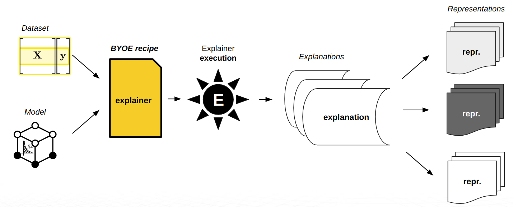
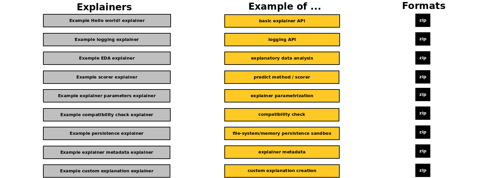
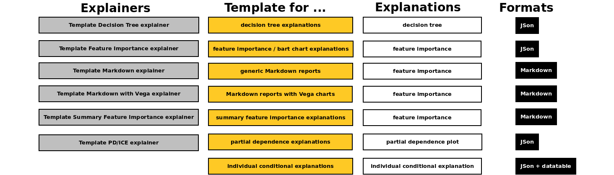
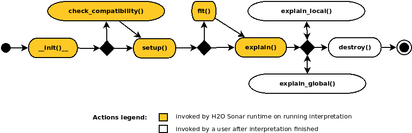

Getting Started with BYOE Recipes
H2O Eval Studio enables you to build an extensible platform of custom explainers. H2O Eval Studio users can implement their own methods to get custom insights or determine model behavior, use their domain expertise or customize existing explainers.
H2O Eval Studio uses the concept of recipes which allows for adding and developing custom explainers - you can bring your own explainer (BYOE).
Introduction to Bring Your Own Explainer recipes

H2O Eval Studio brings interpretability to machine learning models to explain modeling results in a human-readable format. H2O Eval Studio provides different techniques and methods for interpreting and explaining model results.
The set of techniques and methods can be extended with custom explainers as H2O Eval Studio supports BYOE recipes - the ability to Bring Your Own Explainer. BYOE recipe is Python code snippet. With BYOE recipe, you can use your own explainers in combination with or instead of all built-in explainers. This allows you to further extend H2O Eval Studio explainers in addition to out-of-the-box methods.
BYOE recipes can be registered as explainers in H2O Eval Studio runtime - just like a plugin.
How do recipes work?
When H2O Eval Studio user starts interpretation, model compatible explainers (from the available set of out-of-the-box and custom explainers) are selected and executed. Explainers create model explanations that are might be visualized using H2O Eval Studio and/or can be found on the filesystem:
explainer execution
explanation creation
optional explanation normalization
What is the role of recipes?
BYOE allows H2O Eval Studio users to bring their own recipes or leverage the existing, open-source recipes to explain models. In this way, the expertise of those creating and using the recipes is leveraged to focus on domain-specific functions to build customizations.
Where can you find open-source recipe examples and templates?

Open source recipe examples - which are used also in the documentation to demonstrate H2O Eval Studio explainer API - can be found in:
examples/predictive/byoe/examplesH2O Eval Studio distribution directory

Open source recipe templates - which can be used to create quickly new explainers just by choosing desired explainer type / explanation (like feature importance, a decision tree or partial dependence) and replacing mock data with a calculation - can be found in:
examples/predictive/byoe/templatesH2O Eval Studio distribution directory
Explainer
This section describes how to create a new explainer from your method or 3rd party library using BYOE recipes.
Morris sensitivity analysis
Explainer which will be created leverages Morris sensitivity analysis technique from 3rd-party Microsoft open source interpretation library:
Source code of the explainer which will be created:
Similarly, you can create a new explainer using your favorite responsible AI library or your own method.
Create
Custom BYOE recipe explainer is Python class whose parent class is Explainer.
class ExampleMorrisSensitivityExplainer(Explainer):
...
Explainer declares its display name (shown in reports and API), description, and supported experiments (regression, binomial classification, or multinomial classification), explanations scope (global, local), explanations types (like feature importance), required Python library dependencies and other metadata as class field.
class ExampleMorrisSensitivityExplainer(Explainer):
_display_name = "Example Morris Sensitivity Analysis"
_regression = True
_binary = True
_global_explanation = True
_explanation_types = [GlobalFeatImpExplanation]
_modules_needed_by_name = ["gevent==1.5.0", "interpret==0.1.20"]
...
Morris sensitivity analysis explainer will support global feature importance
explanations for regression and binomial experiments and it depends on
Microsoft interpret library (pip package name).

When implementing an explainer, the following methods are invoked through the explainer life-cycle:
__init__()… MUST be implementedExplainer class constructor which takes no parameters and calls parent constructor(s).
check_compatibility() -> bool… OPTIONALCompatibility check which can be used to indicate that the explainer is or is not compatible with the given model, dataset, parameters, etc. apart to automatic explainer metadata-based compatibility check performed by H2O Eval Studio runtime.
setup()… MUST be implementedExplainer initialization which gets various arguments allowing to get enough information for the compatibility check and actual explanations calculation.
fit()… OPTIONALMethod which can pre-compute explainer artifacts like (surrogate) models to be subsequently used by the
explain*()methods. This method is invoked only once in the lifecycle of the explainer.
explain() -> List… MUST be implementedThe most important method which creates and persists global and local explanations on running interpretation.
explain_local() -> list… OPTIONALMethod which creates local explanations. Local explanations is used after the interpretation finishes. Local explanations can be either calculated on demand or use cached artifacts previously prepared by
fit()andexplain()methods.
explain_global() -> list… OPTIONALMethod which creates or updates global explanations. This method is after the interpretation finishes. Global explanations can be either calculated on demand or use cached artifacts previously prepared by
fit()andexplain()methods.
destroy()… OPTIONALPost explainer explain method to clean up resources, files, and artifacts which are no longer needed.
These methods are invoked by recipe runtime through the explainer life-cycle.
Constructor
Explainer must implement default constructor which cannot have required parameters:
def __init__(self):
Explainer.__init__(self)
setup()
The explainer must implement setup() method with the following signature:
def setup(self, model, persistence, key=None, params=None, **explainer_params):
"""Set explainer fields needed to execute `fit()` and `explain()` methods.
Parameters
----------
model : ExplainableModel | None
Model to be explained.
persistence : CustomExplainerPersistence
Persistence API allows safe saving and loading of explanations to
desired storage (file system, memory, database).
key : str
Optional (given) explanation key (generated otherwise).
params : CommonInterpretationParams
Common explainer parameters specified on explainer run.
explainer_params :
Other explainer parameters, options, and configuration.
"""
CustomExplainer.setup(self, model, persistence, key, params, **explainer_params)
The implementation must invoke the parent class setup() method which sets the following
class instance fields:
self.modelInstance of ExplainableModel class which represents the model to be explained. The explainable model provides metadata (like features used by the model) as well as predict method (scorer) of the model.
self.dataset_metaInstance of ExplainableDataset class which represents the dataset that is used to explain the model. It provides both dataset metadata as well as handle to the
datatabledata frame.
self.persistenceInstance of
ExplainerPersistenceclass which provides explainer API to conveniently persist data created by the explainer e.g. to its working directory.
self.paramsCommon interpretation parameters specified on explainer run like model’s target column or columns to drop.
self.loggerLogger which can be used to print info, debug, warning, error or debug messages to explainer’s log - to be used e.g. for debugging.
self.configGlobal H2O Eval Studio configuration.
Instance attributes listed above can be subsequently used in all methods invoked
after the setup().
explain()
Finally the explainer must implement explain() method which is supposed to
create and persist both global and local explanations:
def explain(self, X, y=None, explanations_types: list = None, **kwargs) -> List:
"""Invoke this method to calculate and persist global, local, or both type
of explanation(s) for given model and data(set).
X: datatable.Frame
Dataset frame.
y: datatable.Frame | Any | None
Labels.
explanations_types: List[Type[Explanation]]
Optional explanation types to be built.
Returns
-------
List[Explanation]:
Explanations descriptors.
"""
...
explain() method typically has the following steps:
dataset preparation
predict method creation
explanation(s) calculation
optional explanation normalization
Dataset preparation is performed using H2O Eval Studio utility method which is able to preprocess the dataset as 3rd party Morris sensitivity analysis implementation works on datasets and models with numerical features only i.e.it cannot be run on a dataset with e.g. string categorical features. The utility method automatically detects non-numeric features, performs label encoding (returns the encoder for subsequent use - decoding in predict method) and drops all N/A dataset rows:
def explain(...) -> List:
...
(x, _, self.model.label_encoder, _) = explainable_x.prepare(
le_cat_variables=True,
used_features=self.model.meta.used_features,
cleaned_frame_type=pandas.DataFrame,
)
If the explainer uses a 3rd party library, it typically must create
predict method which is suited for the 3rd party library. In this case,
Morris sensitivity analysis expects predict method input and output data to be
numpy arrays. Therefore the default predict method of the explainable
model (self.model.predict()) must be customized:
def predict_function(dataset: numpy.ndarray):
preds = self.model.predict(
datasets.ExplainableDataset.frame_2_datatable(
dataset,
columns=self.model.meta.used_features,
)
)
return datasets.ExplainableDataset.frame_2_numpy(preds, flatten=True)
Explanation calculation is straightforward - Morris sensitivity analysis is imported and invoked:
from interpret.blackbox import MorrisSensitivity
sensitivity: MorrisSensitivity = MorrisSensitivity(
predict_fn=predict_function, data=x, feature_names=list(x.columns)
)
morris_explanation = sensitivity.explain_global(name=self.display_name)
morris_explanation is a third-party/proprietary explanation. Explainer can:
persist explanation and make it available for download
optionally normalize the explanation to enable the use of H2O Eval Studio library functions for data visualization, processing and conversion -
get_result()method can return an instance ofResultclass which provideshelp,data(),plot(),log(),summary(),params()andzip()methods to get machine processable explanation, visualized explanation, explainer log, summary of the explanation, explainer parameters and archive with all files created by the explainer:
def get_result(
self,
) -> results.FeatureImportanceResult:
return results.FeatureImportanceResult(
persistence=self.persistence,
explainer_id=ExampleMorrisSensitivityAnalysisExplainer.explainer_id(),
chart_title=ExampleMorrisSensitivityAnalysisExplainer._display_name,
h2o_sonar_config=self.config,
logger=self.logger,
)
Finally explain() method must return explanations declared by the
custom explainer:
explanations = [self._normalize_to_gom(morris_explanation)]
return explanations
Check Morris sensitivity analysis explainer source code listing.
Register
BYOE recipe explainer must be registered in H2O Eval Studio runtime before it can be run in the interpretation.
Prerequisites:
the explainer must be installed and/or available on the
PYTHONPATH.
Register using Python API
When using Python API the explainer can be registered as follows:
from h2o_sonar import interpret
from example_morris_sa_explainer import ExampleMorrisSensitivityExplainer
explainer_id: str = interpret.register_explainer(
explainer_class=ExampleMorrisSensitivityExplainer,
)
Registration method returns explainer_id which can be subsequently used in
interpret.run_interpretation() to run and parameterize the custom explainer.
Register using Command Line Interface
When using CLI the explainer can be registered as follows:
Make sure that the explainer is (installed) on
PYTHONPATH.Create H2O Eval Studio configuration file with BYOE recipe explainer locator (explainer packages and module name,
::separator, explainer class ):
{
"custom_explainers": [
"example_morris_sa_explainer::ExampleMorrisSensitivityAnalysisExplainer"
]
}
Store above configuration to
h2o-sonar-config.jsonfile (see also Library Configuration).Use the configuration file when you will run configuration, list explainers or use any other
h2o-sonarcommand.
H2O Eval Studio will load the configuration and automatically register the explainer.
Run
To run a custom BYOE recipe explainer, run the interpretation and specify explainer ID assigned to it on registration.
Run using Python API
When using Python API the explainer can be run as follows:
# register the explainer
explainer_id: str = interpret.register_explainer(...)
# run the explainer
interpretation = interpret.run_interpretation(
dataset=dataset_path,
model=model_to_be_explained,
target_col=target_col,
explainers=[explainer_id],
)
Please note that only basic set of explainers is run by default - in order to run new BYOE recipe explainer you can use one of the following options:
use
explainers=[explainer_id]to run only new explainer - the explainer is identified by ID created during its registrationuse
explainer_keywords=[interpret.KEYWORD_FILTER_ALL]parameter to run all compatible explainers
Run using Command Line Interface
When using CLI the explainer can be run as follows:
$ h2o-sonar run interpretation \
--dataset=dataset.csv \
--model=model-to-be-explained.pkl \
--target-col=TARGET \
--config-path=h2o-sonar-config.json
--all-explainers
This shell command will use h2o-sonar-config.json configuration file
(created in the
explainer registration step), register
the custom explainer and run all explainers compatible with the model. Please
note that only basic set of explainers is run by default - in order to run
new BYOE recipe explainer you can use one of the following options:
use
--all-explainersparameter to run all compatible explainers (which is used in the example above)use
--explainer-ids=example_morris_sa_explainer.ExampleMorrisSensitivityAnalysisExplainerto run only new explainer - the explainer is identified by ID created during its registration - simply replace::with.in the locator to get ID
Debug
To debug an explainer, you can use self.logger instance attribute and log
debugging messages, exceptions, and values:
def explain(...):
...
self.logger.debug("This is a debug message.")
These log messages are stored in explainer’s log which can be found in:
$RESULTS_DIRECTORY/h2o-sonar/mli_experiment_<UUID>/explainer_<explainer ID>_<UUID>/log
Where $RESULT_DIRECTORY is the current directory, or result_dir is specified
in the interpretation parameter. You may also check H2O Eval Studio log with runtime
and interpretations’ log messages, which can be found in:
$RESULTS_DIRECTORY/h2o-sonar/h2o-sonar.log
Use both logs to determine the root cause of the failure, fix it and simply re-register and re-run the explainer in the same way.
Result
The explainer creates and persists explanations:
.
├── h2o-sonar
│ └── mli_experiment_<UUID>
│ ├── explainers_parameters.json
│ ├── explainer_tests_explainers_doc_example_morris_sa_explainer_ExampleMorrisSensitivityAnalysisExplainer_<UUID>
│ │ ├── global_feature_importance
│ │ │ ├── application_json
│ │ │ │ ├── explanation.json
│ │ │ │ └── feature_importance_class_0.json
│ │ │ ├── application_json.meta
│ │ │ ├── application_vnd_h2oai_json_datatable_jay
│ │ │ │ ├── explanation.json
│ │ │ │ └── feature_importance_class_0.jay
│ │ │ └── application_vnd_h2oai_json_datatable_jay.meta
│ │ ├── log
│ │ │ └── explainer_run_<UUID>.log
│ │ ├── result_descriptor.json
│ │ └── work
│ ├── interpretation.html
│ └── interpretation.json
├── h2o-sonar.html
└── h2o-sonar.log
After the interpretation finishes, you can check out explanations on the filesystem
(see interpretation directory structure). The best location where to start is
the interpretation HTML report which can be found in
h2o-sonar/mli_experiment_<UUID>/interpretation.html:

Alternatively, you can use Python API to get normalized data, visualize explanations, or archive all artifacts created by the explainer (see h2o_sonar.lib.api.commons module).
Data
When using Python API you can get normalized explanation data as follows:
# run the explainer
interpretation = interpret.run_interpretation(...)
# explainer result
result = interpretation.get_explainer_result(explainer_id=explainer_id)
# normalized explanations data
explanation_data = result.data()
Different types of explanations may accept different parameters allowing you to choose e.g. feature or class (which is not applicable in this case).
The above method returns the frame which looks like this:
| feature importance
| str32 float64
-- + --------- ----------
0 | ID 0.33
1 | LIMIT_BAL 0.3285
2 | BILL_AMT6 0.3225
3 | AGE 0.207
4 | EDUCATION 0.18
5 | PAY_0 0.1485
6 | BILL_AMT2 0.132
7 | PAY_5 0.117
8 | PAY_AMT2 0.111
9 | PAY_2 0.1005
10 | PAY_3 0.099
11 | PAY_AMT1 0.084
12 | BILL_AMT3 0.081
13 | PAY_4 0.0765
14 | PAY_AMT5 0.072
15 | MARRIAGE 0.0705
16 | BILL_AMT1 0.0615
17 | PAY_AMT3 0.0525
18 | PAY_AMT6 0.042
19 | BILL_AMT4 0.0375
20 | PAY_6 0.036
21 | BILL_AMT5 0.0195
22 | PAY_AMT4 0.0195
23 | SEX 0.0135
[24 rows x 2 columns]
Plot
When using Python API you can get explanation visualization as follows:
# run the explainer
interpretation = interpret.run_interpretation(...)
# explainer result
result = interpretation.get_explainer_result(explainer_id=explainer_id)
# visualized explanation
result.plot(file_path="morris_sa_plot.png")
Different types of explanations may accept different parameters allowing you to
choose e.g. feature or class (which is not application in this case). Parameter
file_path is optional, in case it’s not specified, the explanation is rendered
so that it can be shown e.g. in Jupyter Notebook.
Archive
When using Python API you can get archive with all artifacts created by the explainer as follows:
# run the explainer
interpretation = interpret.run_interpretation(...)
# explainer result
result = interpretation.get_explainer_result(explainer_id=explainer_id)
# visualized explanation
result.zip(file_path="morris_sa_archive.zip")
The explainer creates the following directory structure on the filesystem:
explainer_tests_explainers_doc_example_morris_sa_explainer_ExampleMorrisSensitivityAnalysisExplainer_a89627ee-ab4e-4725-a14b-381f319b2252
├── global_feature_importance
│ ├── application_json
│ │ ├── explanation.json
│ │ └── feature_importance_class_0.json
│ ├── application_json.meta
│ ├── application_vnd_h2oai_json_datatable_jay
│ │ ├── explanation.json
│ │ └── feature_importance_class_0.jay
│ └── application_vnd_h2oai_json_datatable_jay.meta
├── log
│ └── explainer_run_a89627ee-ab4e-4725-a14b-381f319b2252.log
├── result_descriptor.json
└── work
Conclusion
In this tutorial you learned how to implement, register, run, debug and get explanations of BYOE recipe explainers.
Morris sensitivity analysis explainer source code
from typing import List
import datatable
import numpy
import pandas
from h2o_sonar.explainers.commons import explainers_commons
from h2o_sonar.lib.api import commons
from h2o_sonar.lib.api import datasets
from h2o_sonar.lib.api import explainers
from h2o_sonar.lib.api import explanations as e10s
from h2o_sonar.lib.api import formats as f5s
from h2o_sonar.lib.api import models
from h2o_sonar.lib.api import persistences
from h2o_sonar.lib.api import results
class ExampleMorrisSensitivityAnalysisExplainer(explainers.Explainer):
"""InterpretML: Morris sensitivity analysis explainer."""
# explainer display name (used e.g. in explainer listing)
_display_name = "Example Morris Sensitivity Analysis"
# explainer description (used e.g. in explanations help)
_description = (
"Morris sensitivity analysis (SA) explainer provides Morris sensitivity "
"analysis based feature importance which is a measure of the contribution of "
"an input variable to the overall predictions of the model. In applied "
"statistics, the Morris method for global sensitivity analysis is a so-called "
"one-step-at-a-time method (OAT), meaning that in each run only one input "
"parameter is given a new value. This explainer is based based on InterpretML "
"library - see http://interpret.ml"
)
# declaration of supported experiments: regression / binary / multiclass
_regression = True
_binary = True
# declaration of provided explanations: global, local or both
_global_explanation = True
# declaration of explanation types this explainer creates e.g. feature importance
_explanation_types = [e10s.GlobalFeatImpExplanation]
# required Python package dependencies (can be installed using pip)
_modules_needed_by_name = ["gevent==1.5.0", "interpret==0.1.20"]
# explainer constructor must not have any required parameters
def __init__(self):
explainers.Explainer.__init__(self)
# setup() method is used to initialize the explainer based on provided parameters
def setup(
self,
model: models.ExplainableModel | None,
persistence: persistences.ExplainerPersistence,
key: str | None = None,
params: commons.CommonInterpretationParams | None = None,
**explainer_params,
):
explainers.Explainer.setup(
self,
model=model,
persistence=persistence,
key=key,
params=params,
**explainer_params,
)
self.persistence.save_explainers_params({self.explainer_id(): {}})
# explain() method creates the explanations
def explain(
self,
X,
explainable_x: datasets.ExplainableDataset | None = None,
y=None,
**kwargs,
) -> List:
# import 3rd party Morris Sensitivity Analysis library
from interpret import blackbox
# DATASET: encoding of categorical features for 3rd party library which
# support numeric features only, filtering of rows w/ missing values, and more
(x, _, self.model.label_encoder, _) = explainable_x.prepare(
le_cat_variables=True,
used_features=self.model.meta.used_features,
cleaned_frame_type=pandas.DataFrame,
)
# PREDICT FUNCTION: library compliant predict function which works on numpy
def predict_function(dataset: numpy.ndarray):
# score
preds = self.model.predict(
datasets.ExplainableDataset.frame_2_datatable(
dataset,
columns=self.model.meta.used_features,
)
)
# scoring output conversion to the frame type required by the library
return datasets.ExplainableDataset.frame_2_numpy(preds, flatten=True)
# CALCULATION of the Morris SA explanation
sensitivity: blackbox.MorrisSensitivity = blackbox.MorrisSensitivity(
predict_fn=predict_function, data=x, feature_names=list(x.columns)
)
morris_explanation = sensitivity.explain_global(name=self.display_name)
# NORMALIZATION of proprietary Morris SA library data to standard format
explanations = [self._normalize_to_gom(morris_explanation)]
# explainer MUST return explanation(s) declared in _explanation_types
return explanations
#
# optional NORMALIZATION to Grammar of MLI (GoM)
#
# Normalization of the data to the Grammar of MLI defined format. Normalized data
# can be visualized using H2O Eval Studio components.
#
# This method creates explanation (data) and its representations (JSon, datatable)
def _normalize_to_gom(self, morris_explanation) -> e10s.GlobalFeatImpExplanation:
# EXPLANATION
explanation = e10s.GlobalFeatImpExplanation(
explainer=self,
display_name=self.display_name,
display_category=e10s.GlobalFeatImpExplanation.DISPLAY_CAT_CUSTOM,
)
# FORMAT: explanation representation as JSon+datatable - JSon index file which
# references datatable frame with sensitivity values for each class
jdf = f5s.GlobalFeatImpJSonDatatableFormat
# data normalization: 3rd party frame to Grammar of MLI defined frame
# conversion - see GlobalFeatImpJSonDatatableFormat docstring for format
# documentation and source for helpers to create the representation easily
explanation_frame = datatable.Frame(
{
jdf.COL_NAME: morris_explanation.data()["names"],
jdf.COL_IMPORTANCE: list(morris_explanation.data()["scores"]),
jdf.COL_GLOBAL_SCOPE: [True] * len(morris_explanation.data()["scores"]),
}
).sort(-datatable.f[jdf.COL_IMPORTANCE])
# index file (of per-class data files) (JSon)
(
idx_dict,
idx_str,
) = f5s.GlobalFeatImpJSonDatatableFormat.serialize_index_file(
classes=["global"],
doc=ExampleMorrisSensitivityAnalysisExplainer._description,
)
json_dt_format = f5s.GlobalFeatImpJSonDatatableFormat(explanation, idx_str)
json_dt_format.update_index_file(
idx_dict, total_rows=explanation_frame.shape[0]
)
# data file (datatable)
json_dt_format.add_data_frame(
format_data=explanation_frame,
file_name=idx_dict[jdf.KEY_FILES]["global"],
)
# JSon+datatable format can be added as explanation's representation
explanation.add_format(json_dt_format)
# another FORMAT: explanation representation as JSon
# Having JSon+datatable formats it's easy to get other formats like CSV,
# datatable, ZIP, ... using helpers - adding JSon representation:
explanation.add_format(
explanation_format=f5s.GlobalFeatImpJSonFormat.from_json_datatable(
json_dt_format
)
)
return explanation
def get_result(
self,
) -> results.FeatureImportanceResult:
return results.FeatureImportanceResult(
persistence=self.persistence,
explainer_id=ExampleMorrisSensitivityAnalysisExplainer.explainer_id(),
chart_title=ExampleMorrisSensitivityAnalysisExplainer._display_name,
h2o_sonar_config=self.config,
logger=self.logger,
)
Running BYOE recipe source code
# BYOE recipe explainer to be run
explainer_type = ExampleMorrisSensitivityAnalysisExplainer
# register the explainer
explainer_id = interpret.register_explainer(
explainer_class=explainer_type
)
# run the explainer
interpretation = interpret.run_interpretation(
dataset=dataset_path,
model=model_to_be_explained,
target_col=target_col,
explainers=[explainer_id],
)
# get explainer result
result = interpretation.get_explainer_result(
explainer_id=explainer_id
)
# get explanation data
data = result.data()
# get explanation chart
result.plot(file_path=os.path.join(tmpdir, "morris_sa_plot.png"))
# get explanation archive
result.zip(file_path=os.path.join(tmpdir, "morris_sa_archive.zip"))